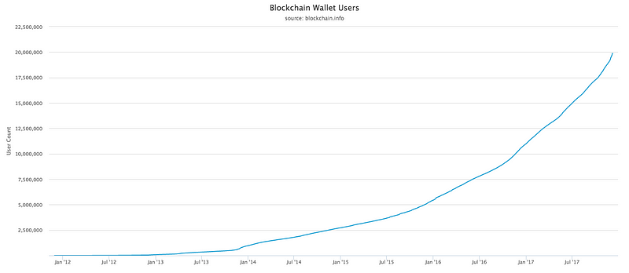

Sign up for the chance to receive a letter from me annually on a random date.
Bitcoin is Exponential Growth, Not a Bubble
Published by Kevin Denman on: December 17, 2017 | Read on Medium
There are several examples of bubbles in history, which in retrospect, all look the same. Here is how they all unfold:
- Step one: a few people start making an insane amount of money.
- Step two: lay investors follow suit, and start ploughing money into a nebulous financial asset.
- Step three: due to the capital influx, the financial asset appreciates to an incomprehensible, astronomical level.
- Step four: someone realizes the value of the financial asset cannot be reconciled with the underlying real assets.
- Step five: a sell-off ensues, causing the bubble to pop, and the value of the financial asset plummets as quickly as it appreciated.
Why is Bitcoin different?
Many financial analysts are shouting "bubble" from the rooftops because step one, two, and three above do apply to Bitcoin. Step four, however, is when real differences emerge. Is the value real? Let me explain why I think it is.
- Value is explained by network effects. Because of this, exponential growth is rational and comparing it to Tulips, a basket of internet stocks, or subprime mortgages is a false equivalency.
- Scarcity is real. The supply of Bitcoins is fixed by an algorithmic protocol that cannot be changed. In many traditional economic bubbles, manipulated or misunderstood scarcity is the cause.
- Demand, and utility, is multi-dimensional. Bitcoin is much more than a financial asset like a stock or bond. It is a share (like a security), a currency (like the US dollar), and a payment network (like Paypal). In other words, it is better described as a technological innovation that can impact the entire monetary system.
Valuation of a network, such as Bitcoin, follows Metcalfe's Law. Metcalfe's law helps us explain the exponential relationship between the number of users on a network (n) and the value the entire network (v) using the formula v = n². To understand the potential value of one Bitcoin, let's dig in to n, the variable driving the value of the entire network.
n, as it relates to Bitcoin, is not simply the number of users. n it is the number wallets. Each person may have a wallet for business, for charity, for banking, for transportation, etc. The point here is, the theoretical limit of n for Bitcoin is both greater than Facebook and unknown. In fact, in consideration of Melcalfe's Law, we may be dealing with a higher exponent than two.
Supply of Bitcoin is fixed to 21 million. The emission of Bitcoins is cut in half every 210,000 blocks on the chain, forcing the future supply curve to asymptotically approach 21 million, as depicted below. There is much debate on the best emission policy, but none-the-less, emission will grind to a halt.
Demand is climbing exponentially towards a theoretical limit greater than earth's population. Conservatively speaking, we are less than 5% into that theoretical limit.
As mentioned, utility, and demand, for the Bitcoin network are multi-dimensional. This can be broken down into macro and micro adoption waves, based on real utility and user profiles.
For the macro adoption waves, we have only just begun using Bitcoin as a store of value, similar to gold, as depicted in Wave 1 below. Looking forward to 2018, or Wave 2, a global network of merchants will emerge seeking to boost revenues and minimize transaction costs by accepting Bitcoin. Once both the chicken and the egg are in place, Wave 3 will ensue, and Bitcoin will gain the legitimacy it needs for more countries around the world to recognize it as legal currency.
To help understand Wave 1 (where we are today), I have broken it down into three micro-waves of Bitcoin adoption across an estimated 50 million wallets.
The micro-waves are as follows:
- Satoshi: this wave consists of active contributors and affiliates of the initial launch of the Bitcoin network. They represent a very small group.
- Evangelist: this wave consists of the early adopters who studied Bitcoin and the blockchain and learned it's potential. They preached from one SF bar to the next.
- FOMO (fear-of-missing-out): this wave consists of people who have a second degree connection to the evangelists. They were told about Bitcoin a while ago, and now they wish they listened to their evangelical friend back in 2015.
The people within macro-wave 1, for the most part, are using Bitcoin as a store of value. They bought it because they (or their friends) understand that when macro-waves 2 and 3 kick off, it will be worth significantly more than it's purchase price.
In summary, I think Bitcoin is true exponential growth, not a bubble. When considering the potential value acceleration of the total network, the scarcity of Bitcoins, and the multi-dimensional utility of Bitcoin, the current exponential price behavior is what one might expect. Wave 1 has just begun!
Further discussion: I am a ground-truth-seeker and look forward to comments, debate, and/or new information for the community.
Disclaimer: I am bullish on Bitcoin long-term and am in the latter part of the evangelist wave.
Sources
- https://blockchain.info/charts/n-transactions?timespan=all
- http://www.businessinsider.com/bitcoin-compared-to-all-of-the-worlds-money-2017-6
- http://www.businessinsider.com/bitcoin-price-how-to-value-fundstrat-tom-lee-2017-10
- https://www.investopedia.com/terms/d/dutch_tulip_bulb_market_bubble.asp
- https://en.wikipedia.org/wiki/Metcalfe%27s_law
- http://time.com/money/5002207/richest-people-with-bitcoin/
- https://techcrunch.com/2017/06/27/facebook-2-billion-users/
- https://en.wikipedia.org/wiki/Economic_equilibrium